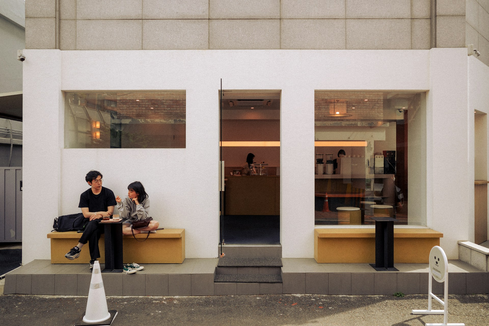
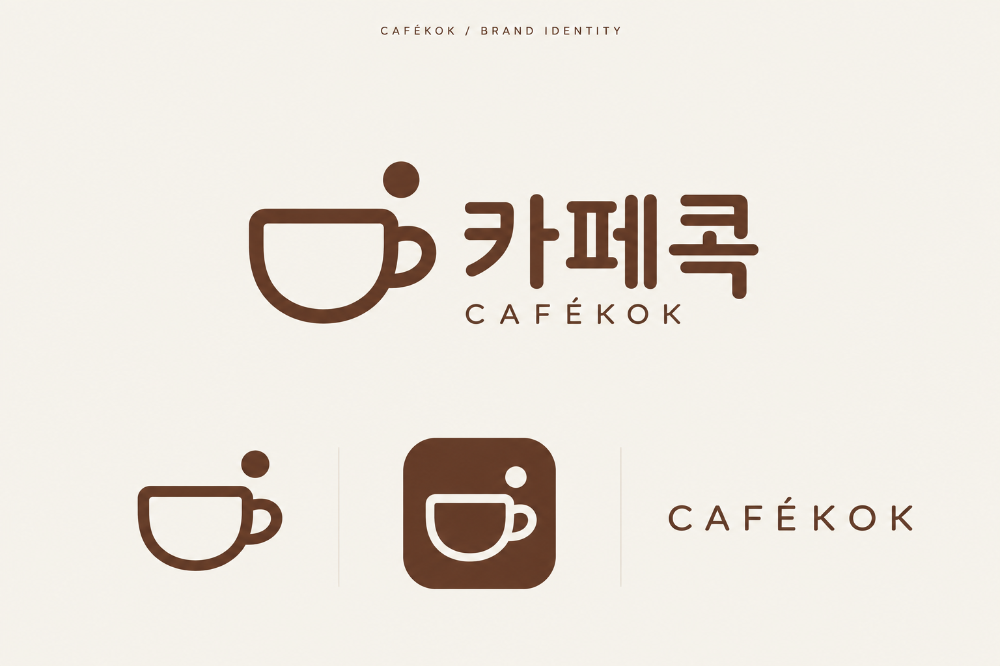

나의 취향 알아보기
여섯 가지 항목으로 선호하는 카페의 조건을 입력합니다.
주변 카페는 쉽게 찾을 수 있지만, 마음에 드는 곳을 고르려면 사진과 리뷰를 한참 살펴보게 됩니다.
내 취향에 맞는 후보부터
살펴볼 수 있다면 어떨까?
지역·주변 카페 찾기
사진·리뷰·메뉴 살펴보기
분위기·거리·가격 비교
선택한 카페로 이동
카페콕은 개인의 취향과 방문 목적을 함께 고려해 카페 선택을 돕는 모바일 앱 기획입니다.
분위기 · 공간 · 좌석
메뉴 · 가격 · 이동 반경
작업하기 · 대화하기
데이트 · 가볍게 들르기
여섯 가지 항목으로 선호하는 카페의 조건을 입력합니다.
오늘 필요한 공간과 정보를 중심으로 후보를 살펴봅니다.
어떤 조건이 맞는지 확인하고, 마음에 든 카페를 저장합니다.
입력은 가볍게
취향 입력을 건너뛰고 탐색하거나, 나중에 수정하는 흐름을 구상했습니다.
다른 후보도 쉽게
상세 화면에서 추천 목록으로 돌아가 조건을 바꿔볼 수 있습니다.



아이보리 · 우드 브라운 · 부드러운 자연광
나에게 맞는 카페를 찾다
Pretendard · Regular / SemiBold

아래 화면은 상세페이지 구성을 위한 UI 콘셉트입니다. 최종 앱 화면으로 순차 교체합니다.
카페를 고르는 여섯 가지 기준을 나누어 입력하는 흐름입니다.
방문 목적과 관련된 정보를 추천 카드에서 먼저 보여주는 방향입니다.

조용한 분위기 · 넓은 테이블
사진과 이용 조건을 함께 확인하고 마음에 드는 후보를 남깁니다.
실제 데이터 연동 전, 추천 기준과 필요한 정보를 구체화한 구현 구상입니다.
직접 확인한 카페 정보로 초기 데이터 범위를 제한합니다.
거리·가격 조건으로 후보를 좁히고, 취향·목적 태그를 정렬 기준으로 검토합니다.
결과 없음, 위치 권한 거부, 정보 부족 시의 안내와 대체 탐색을 보완합니다.
카페콕은 취향과 상황을 화면의 탐색 기준으로 옮긴 개인 기획 프로젝트입니다.
현재는 기획과 UI 설계 단계입니다. 추천 효과와 실제 사용성은 아직 검증하지 않았으며, 다음 단계에서는 취향 입력의 부담과 추천 이유의 이해도를 확인할 계획입니다.